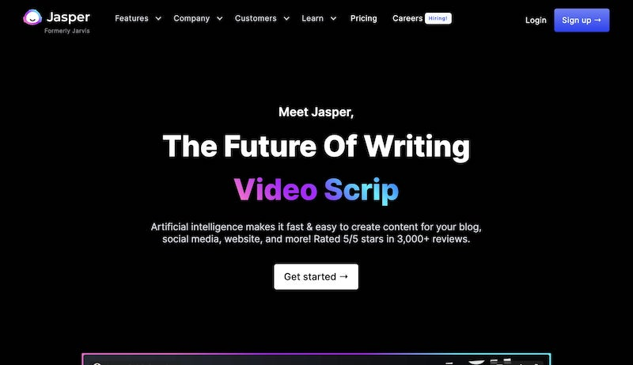
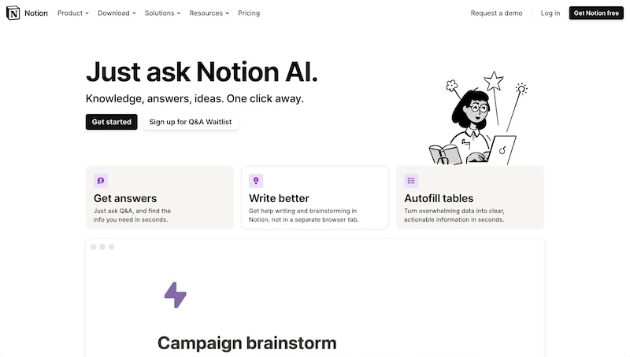
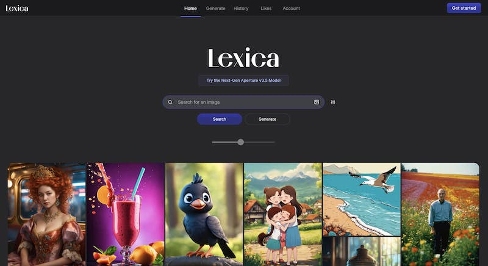
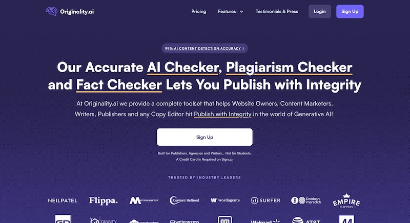
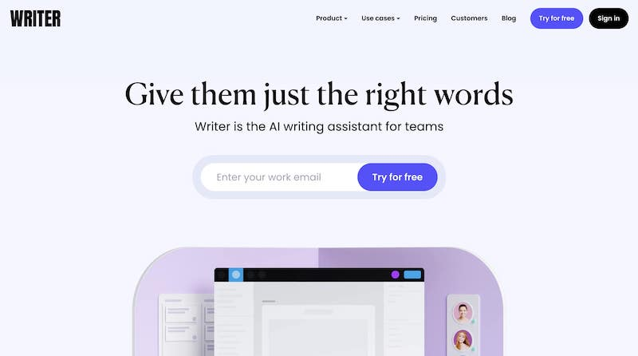
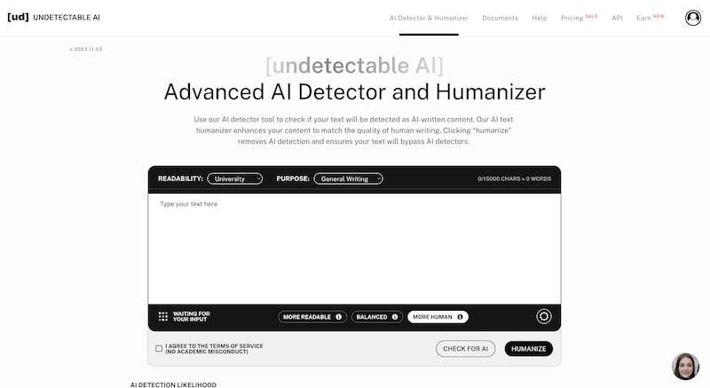
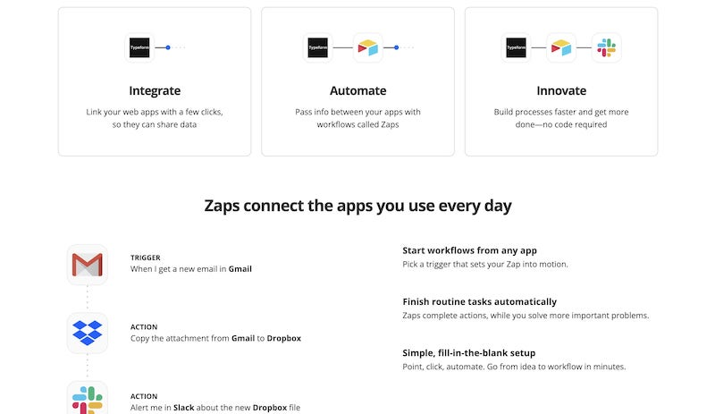

10 best AI marketing tools I'm using to get ahead in 2024
Discover the 22 best AI marketing tools some of the biggest brands use today. Learn how marketing teams are using artificial intelligence to grow fast.

Some of the biggest brands like Google, IBM, and Airbnb are using AI marketing tools to gain a competitive edge. We’ve uncovered some of the best AI marketing tools on the market today and listed them below.
It’s important to zero in on what you want your AI marketing tool to achieve, so let’s start by identifying what artificial intelligence is especially useful for, and what it can do for your business.
What is AI used for in marketing?
In 2024, marketing is all about data — information on your competitors, on market trends, and on what your customers (and potential customers) are saying about your product. There’s a lot of information out there but it’s hard to manually source. AI makes this process much simpler. It does quickly, and at scale, what would be onerous to achieve by hand.
Techniques including sentiment analysis can be used to aggregate positive and critical product reviews. Competitor intelligence can keep you up to date with what rival brands are doing. You can improve the ROI of your marketing campaigns with better targeting. There are even AI-driven systems to write creative copy, helping you keep up with the internet’s incessant demand for content (SEO optimization)
It’s likely that you’ll use more than one AI-powered software solution. In fact, most data manipulation tools now use the power of machine-learning and automation to achieve impressive results at scale. In this rundown of some of the best AI-driven apps and platforms, we’ll explain exactly what each one does, what its benefits are, as well as any limitations it might have.
10 best AI marketing tools to grow your business in 2024
Here are 22 AI marketing tools you need to try in 2024:
- Jasper AI (for copywriting)
- Notion AI (for productivity)
- Surfer SEO (for SEO content writing)
- Lexica Art (for blog thumbnails
- Content at Scale (for generating SEO blog posts)
- Originality AI (for AI content detection)
- Writer.com (content writing for teams)
- Undetectable AI (for rewriting AI content)
- FullStory (for digital experiences)
- Zapier (for automating tasks)
1. Jasper AI (for copywriting)
The people behind Jasper, the best-known of the various AI-powered copywriting systems, quickly became a victim of their own success. Marvel sent them a cease-and-desist letter after they had secured more than 350,000 users. Their AI was previously known as Jarvis, cheekily inspired by Tony Stark (AKA Iron Man)’s virtual assistant. And so, Jasper was reborn.
Jasper, this human writer must grudgingly accept, is remarkably good at creating copy, in a range of tones and styles, on any topic you can throw at it. Its creators say it has “read” 10% of the internet. How well does Jasper work? Using a free trial, I asked Jasper to write 40 words about AI in business automation. It came up with:
AI is the next step in business automation. AI had been instrumental in improving business processes. AI can be deployed to an organization’s business process for a particular strategic purpose to increase efficiencies, cut costs and improve customer service.
This is certainly a decent start, although you still require human intervention to make sense of the flow of the copy, and there’s an element of repetition. Jasper’s natural language processing is perhaps best seen as a tool to create early drafts for later polishing by human copywriters.
Whether you’re looking to write copy for email campaigns, product descriptions for ecommerce products, blog posts, or landing page copy, Jasper can do it all.
It has a simple and intuitive dashboard, is inexpensive to implement, and will certainly speed up the content creation process. Jasper, which boasts over 5,000 5-star product reviews, won’t turn you into Tolstoy, but it will keep those vital SEO page scores high.
2. Notion AI (for productivity)
Notion AI is a cool new feature that Notion recently added to their popular productivity platform. It uses AI to make getting stuff done in Notion a breeze. Basically, you can ask questions in plain English about anything in your Notion workspace — whether it's your notes, projects, docs or wikis — and Notion AI will automatically pull up the answer. It's like having a personal assistant built into the project management tool.
The AI can also help you write, brainstorm ideas, fill out tables automatically, and more. So it takes a lot of the manual busywork out of using Notion.
You can try Notion AI free for a while, with the number of free responses you get depending on your workspace membership. The plan is for the AI integration to expand over time and add even more capabilities. Since it works seamlessly with Notion's existing text editor and features, it should feel like a natural upgrade.
The bottom line is that Notion AI makes it even easier to stay organized and work smarter using this popular tool. The AI handles a lot of tedious tasks so you can focus on getting meaningful work done.
3. Surfer SEO (for content writing)
Surfer SEO is a content optimization tool that helps you create copy for ranking on search engines — a worthy goal for any content strategy. While you do the writing, Surfer assesses and scores your content according to its keyword density, readability, length, use of headers, and other aspects which push content up the rankings.
To use Surfer SEO, first you choose your domain, niche, and target audience. The system will then give you actionable insights by highlighting the top-ranking keywords, suggest a content outline structure, and even define image density for your piece. You can work directly on Surfer SEO, which has its own text editor, or copy-paste for quick analysis. As you edit your work, you’ll see the SEO improving in real time.
Integrations are available with other content marketing tools like Jasper, WordPress, Google Docs, and more. Surfer SEO promises hit your organic growth metrics for Google search, and satisfied clients include FedEx, Shopify, Quantas, and Viacom.
4. Lexica Art (for blog thumbnails)
Lexica Art is a high-quality AI image generator that's one of the best I've seen. It creates some of the most realistic AI images and you can generate marketing content for almost anything. I've personally used this generative AI-powered tool to create blog thumbnail images for my SEO (search engine optimization) clients. There are different prompts you can use and save so all the images it generates are "on brand" with whatever brand guidelines you have. Some brands even use it for their social media posts.
If you're looking to move away from standard stock images for your blog thumbnails, this is a tool you definitely need to check out.
5. Content at Scale (for generating SEO blog posts)

Content at Scale is a platform I've been experimenting with for the past few months and I have to say, I'm pretty impressed. Out of all the AI writing tools that I've used, this is one of the few that passes AI detectors. Any time I generate an article with this tool, and run it through an AI detector, it usually comes out at least 70% human-written — which is quite impressive.
The platform is still quite new and the UI can be a bit buggy. But the content it generates is some of the best I've seen when it comes to AI content generation. It's not as flexible like Surfer is in terms of being able to label H2 and H3 headings in your articles, but the actual content it generates is a bit more higher quality than that of Surfer and even Jasper. I definitely recommend playing around with this tool if you're looking to generate SEO blog posts. Of course, you always want a real human to review the final draft.
6. Originality AI (for AI content detection)
Originality AI is an AI content detector and plagiarism tool. I run almost every piece of content through this tool these days to make sure it passes has being written by a human. Of course, I won't run actual human writing through it. But I'll generally run AI generated content, from a tool like Content at Scale, through this just to double check what areas need some work.
This is also a good tool to run your content through if you're working with freelance writers and want to make sure they're not using ChatGPT to generate large portions of text. Of course, take these detectors with a grain of salt. There have been reports of it falsely accusing human writing as AI writing. But, out of most of the AI content detectors out there, I found this one to be one of the best.
7. Writer (content writing for teams)
First off, Writer has secured a high value URL, indicating lofty ambitions. They position their platform as a writer’s assistant for marketing teams. Writer is a collaborative efficiency tool which takes some of the features of a traditional text editor like Word and turbocharges them.
Features include autocorrect, autocomplete, grammar and clarity checks, and there are often-used snippets to paste in. There’s also a suite of intelligence tools to maintain house style, including a database of approved terminology (vital for tech, legal and financial firms). Their AI is light touch, sitting in the background making recommendations rather than rewriting block of copy.
When you have a virtual or hybrid team working with minimal in-person supervision, this AI writer could provide all the reassurance you need that your copy remains professional and accurate across all uses. Clients include Deloitte, Accenture, Twitter and Vistaprint.
8. Undetectable AI (for rewriting AI content)
Undetectable AI is another AI content detector similar to Originality AI. What makes this one different is that it can actually rewrite AI generate content from ChatGPT to make it sound like a human. I've tested this by creating a paragraph of text in ChatGPT, running it through Undetectable AI to rewrite it, then double checking it with Originality AI. To my surprise, it does a pretty good job.
Again, you want to take these AI detectors and rewriters with a grain of salt. Sometimes this tool will rewrite things that don't totally make sense. Or it will purposely mess up in terms of grammar. So, you'll still want to read everything it generates to make sure there are no errors.
9. Fullstory (for digital experiences)

By digital experience, Fullstory mean the journey a site visitor goes through from their first visit to conversion (or dismissal). They make the valuable point that you can learn a huge amount from the unpredictable things users do, which couldn’t have been anticipated.
To make this level of insight possible, Fullstory employ an AI to track every cursor move, click, and page visit across a visitor’s journey to create their “story”. This can then be compared with thousands of other visitors’ stories to derive insight. Fullstory leverage the processing power and scalability of AI automation to discover opportunities and errors much more quickly than any human observer would.
10. Zapier (for automating tasks)
Zapier is really the Lego of tech stack and process integration. Using it you can build connections and marketing automations between thousands of different systems, saving time, promoting efficiency, reducing repetitive tasks, and making cost savings. You build customized workflows to link actions in one system to automated processes in one or more others. The salient data is pulled from the right place each time.
The AI is at work behind the scenes interpreting signals which trigger processes with a speed and efficiency no human team could master. Clients rave about the time savings these zaps create. There’s excellent support too, including a blog, webinars, online no-code community, and Zapier University for training.